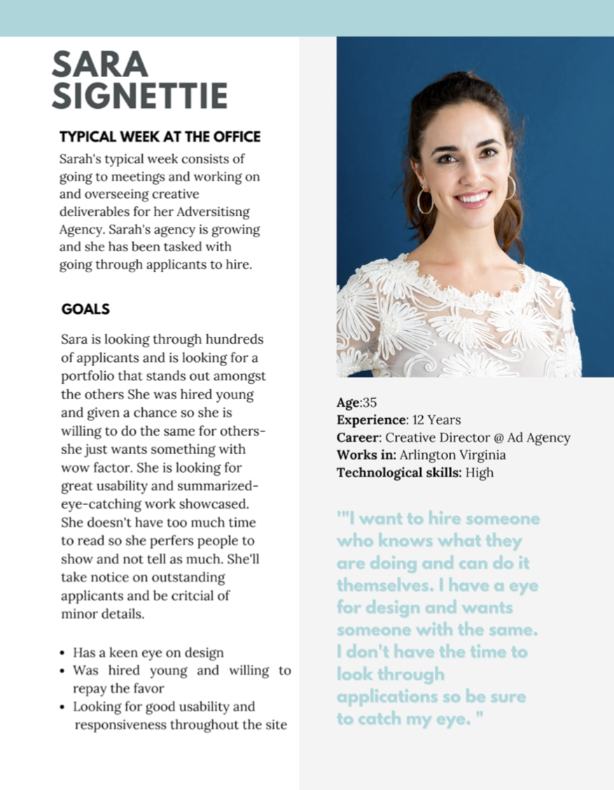
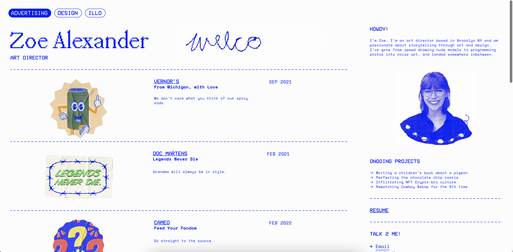
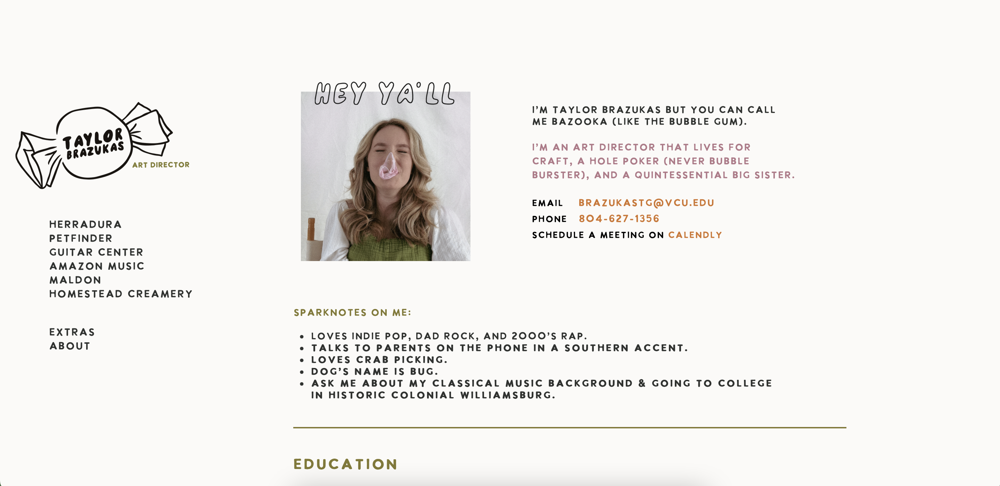
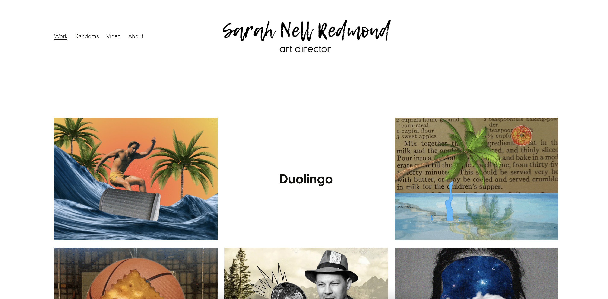
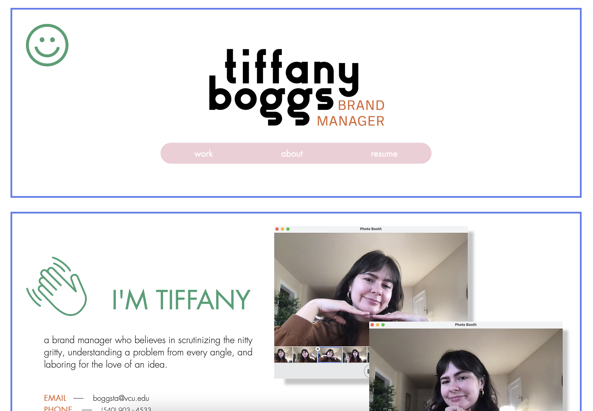
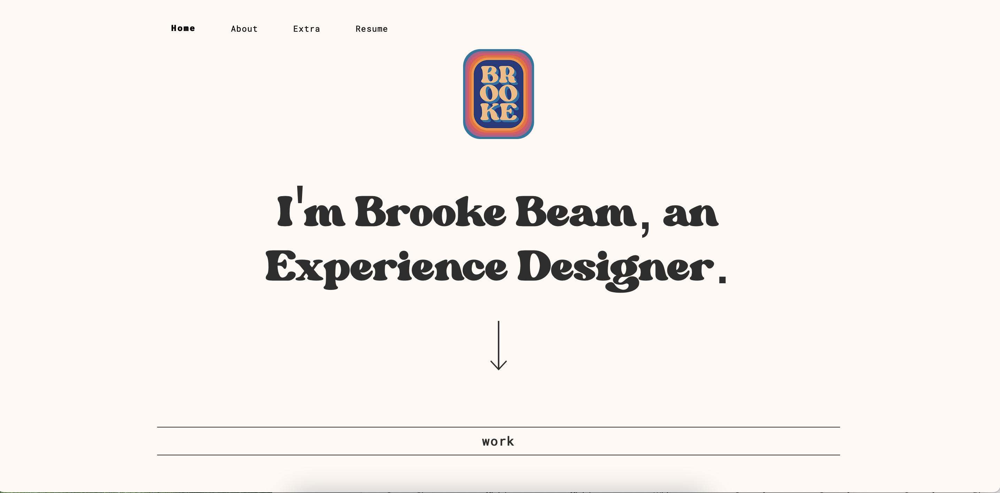
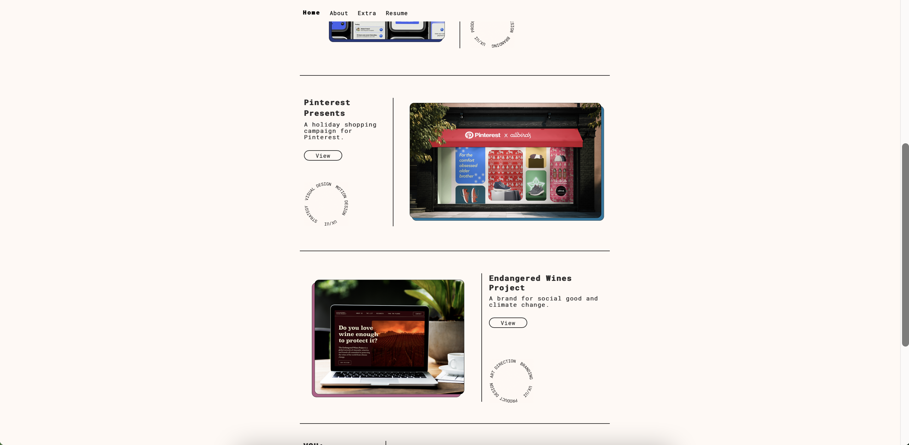

Portfolio Revamp
Julia Yeager | SMAD 408
Overview:
For my individual project, I would like to rework and revamp my portfolio website. I would like to have a fully hand-coded portfolio site to showcase all of my SMAD coursework and other relevant pieces . In my SMAD 308 class, I hand coded my portfolio for my final project, however it was during finals week and I know I can take more time now to update it and make it better. In my site, I only included a few projects so with this revamp I would like to finalize a version that is up-to-date with all of my work. I would also like to have it look very professional with future employers in mind to showcase my skill in coding as well as to learn about me, my project, and my skills. My overall goal is to have this website look as polished as possible and up to website-builder standards equipped with well-written copy in order to land a job!
Goals:
up-to-date site with all relevant work
Showcase elements of my personal brand and show the type of employee and person I am
easy navigation
seamless coding
great usability
Showcase my work on my homepage/change up my current one
fix videos ( I could not put videos through github so I have to upload them through Vimeo and then code that in)
Well-thought out copy about my projects
figure out a way to insert PDFs better
Responsive on (mobile, tablet, web, and desktop?)
Insert cool and innovative bootstrap items in website
Audience:
Very tech savvy individuals
Individuals, recruiters, ect. who will access this site on all platforms
Individuals with usually pretty good internet speed
I would expect a younger-middle age audience working at or above a livable wage.
Possibly corporate audience
Examples:
Future employers
Consulting Recruiters
Advertising executives
JMU Alumni
JMU Professors
Grad Schools
Example persona

Timeline:
Overall website done in time for SMAD day! (October 20th)
9/10: audit of what I want changed
9/16: All copy finalized
9/23: Home page re-designed
9/30: “Design” section and “IXD” section completed
10/7: “UX” section and “Video” section completed
10/14: “About me” section and “Resume” section completed
10/19: All minor issues fix and code validated.
Rough outline, just want it completed by SMAD Day)
Examples and inspiration





